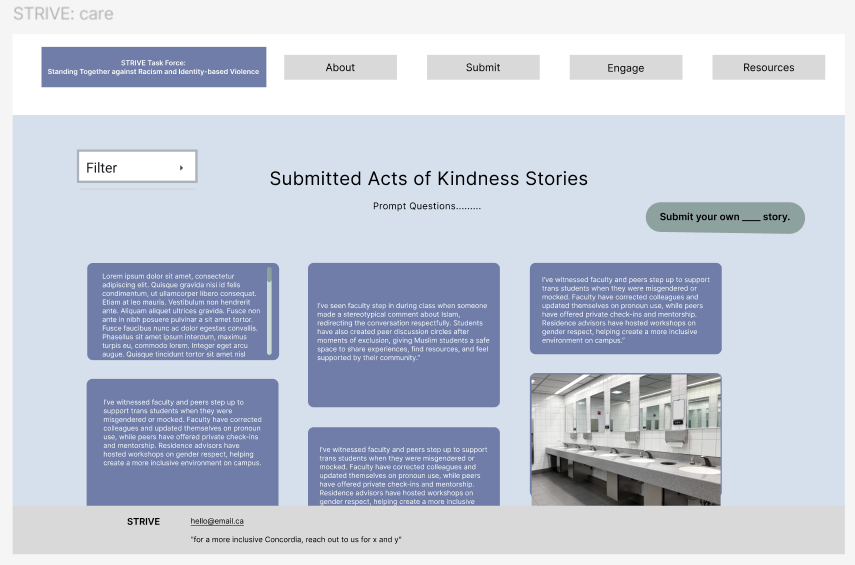

Product UX/UI
My product UX/UI work focuses on designing clear, accessible, and thoughtful digital experiences. I use user-centered design, research, and iterative prototyping to shape flows that feel intuitive, inclusive, and easy to navigate while supporting both user needs and project goals.

Community Storytelling Platform UX/UI
A digital experience centered on accessibility, clarity, and community storytelling, designed to support browsing, submission, and engagement in a welcoming way.
Learn moreSubmission, Browsing, and Engagement Flow
A UI exploration focused on making contribution and discovery feel approachable, balancing structure with warmth across the overall product experience.
Learn moreDesigning for Accessibility and Community Care
A product UX/UI study exploring how interface language, layout, and hierarchy can help users feel supported while engaging with sensitive community-centered content.
Learn more